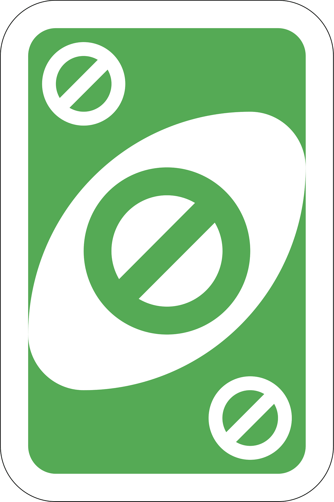
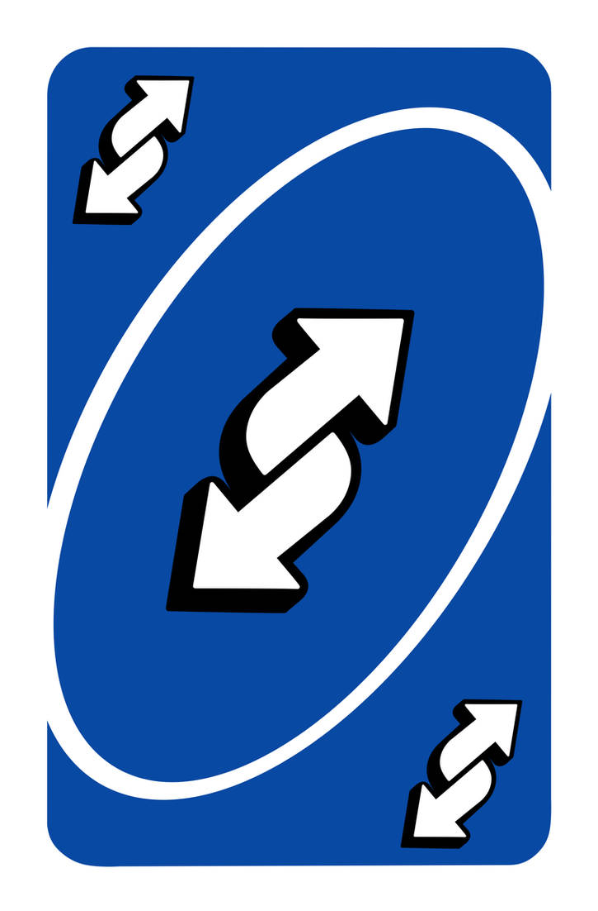
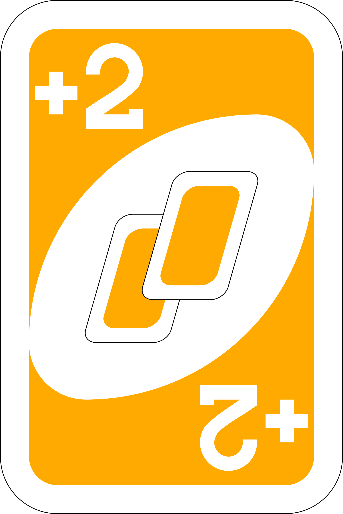

Learn how to play UNO with this interactive rulebook. Click below to get started.
Here you will find everything you need to know about the UNO game, from basic rules to special cards.
UNO is a classic card game where players try to get rid of all their cards by matching them with the top card on the discard pile based on color or number. The first player to play all their cards wins.
There are special cards in UNO that add action to the game: Skip, Reverse, Draw Two, Wild, and Wild Draw Four.
  If a player has only one card left, they must say "UNO!" If another player catches them not saying "UNO" before the next player’s turn, the player must draw two cards.